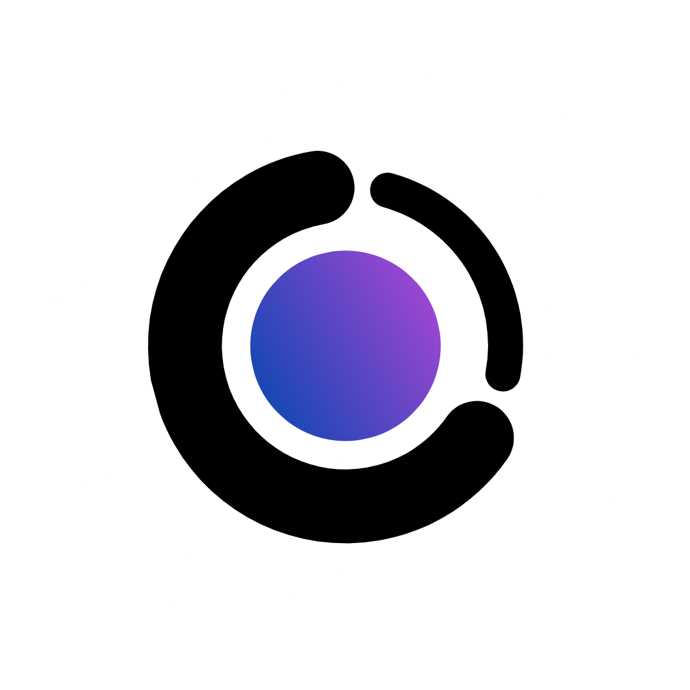

Toggle dark mode
Sets a custom theme
Search Autocomplete
Have Catalyst be displayed in another language.
Each release will have a code name and related content will be included by default but only visible if this setting is turned on.
Sets a custom startup page.
Loads custom css from the userChrome.css file
Sets a custom font
Enables the ad blocker (RESTART REQUIRED)
Enable the sidebar.
Move the sidebar to the right side of the window.
Toggles forced dark mode for all sites.
Sets a custom user agent.